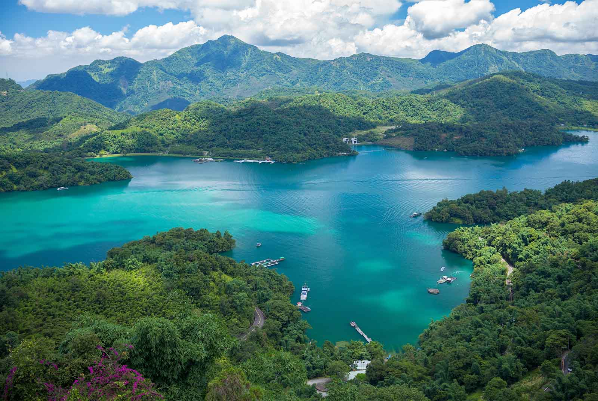
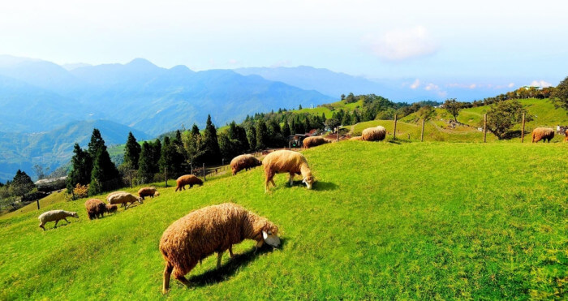
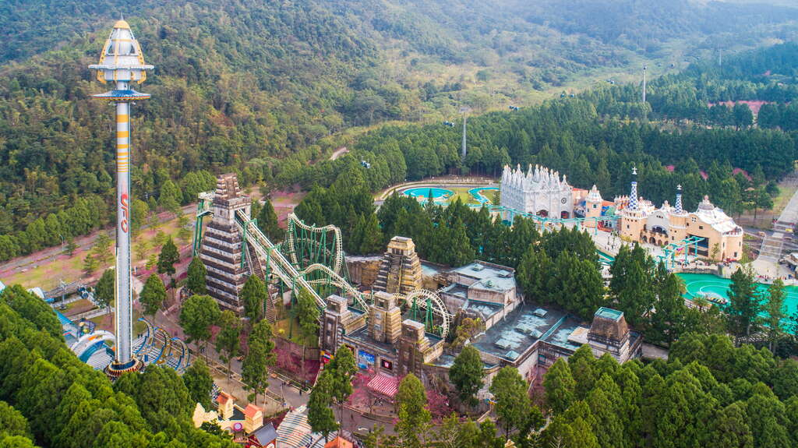
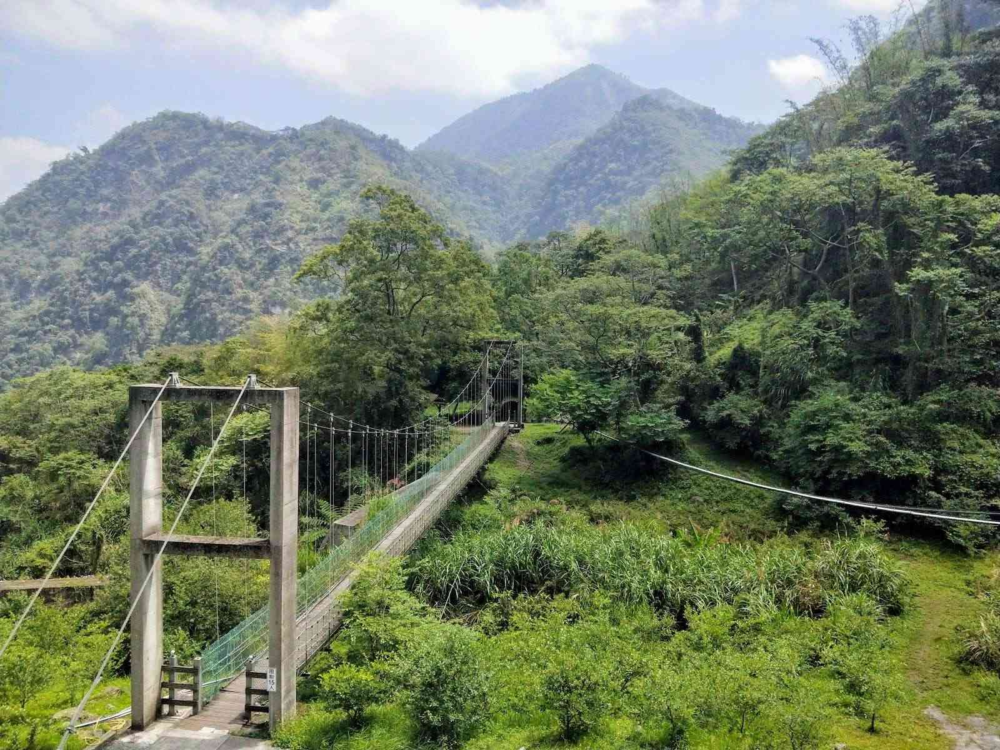

探索南投
南投是台灣中部的一個美麗城市，擁有壯觀的自然景觀和豐富的文化遺產。以下是南投著名的景點:

日月潭
日月潭是全台灣最大的天然內陸湖泊，海拔高度七百六十公尺，周圍層層山巒環繞，湖面碧波粼粼，晨曦與夕陽景致更是迷人，壯麗景色美不勝收，「雙潭秋月」更為台灣早期的八景之一。

清境農場
清境農場簡介 清境農場位於南投縣仁愛鄉大同村，面積約有760公頃、海拔約為1748公尺，坐擁在群山之間，視野廣闊，可欣賞奇萊山日出的奇景，遠眺合歡山積雪，山嵐雲霧飄渺，夕陽晚霞的繽紛萬變，夜晚仰望燦爛的銀河星空，因此清境農場有『霧上桃源』的美稱。

九族文化村
位於南投縣魚池鄉大林村金天巷45號的九族文化村，係由水沙連歐洲花園、歡樂世界與原住民部落景觀區三大部份組成，佔地62公頃，最高海拔900公尺。 擁有臺灣遊樂園8大最─臺灣最高的自由落體、最大的歐洲花園、海拔最高、樹最多、原住民文化最豐富。

鳳凰谷
佔地30公頃的鳳凰谷鳥園生態園區（原國立鳳凰谷鳥園）為一天然森林，配合自然地形，迂迴而設十餘座鳥園，飼養展示臺灣本土與世界各地五千餘隻各種生態習性不同的山鳥、河鳥、海鳥與候鳥，闢有步道與石階銜接，全程約2公里，為東南亞最具規模的鳥園。